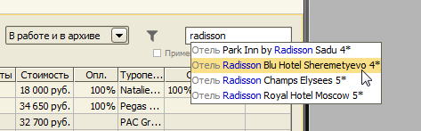
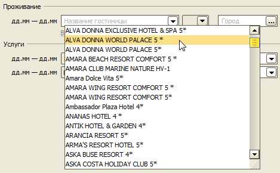
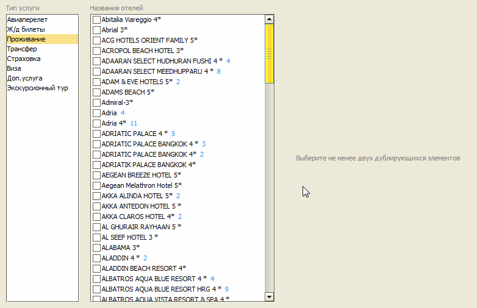
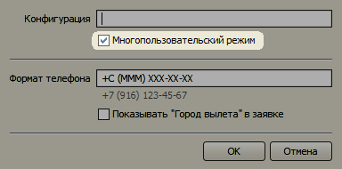

Изменения в версии 2.9.3
- Отбор заявок по отелю
- Удаление дубликатов в описаниях услуг
- Несколько пользователей в однопользовательской версии
- Новые теги для шаблона договора
Отбор заявок по отелю
В журнал заявок добавлена возможность искать заявки по названию отеля.

Удаление дубликатов в описаниях услуг
Описания услуг представляют собой текстовые данные. Чтобы каждый раз не набирать повторяющиеся названия и описания, в программе предусмотрен выбор из списка ранее введенных. Со временем, в этих списках образуются дублирующиеся элементы, обозначающие одно и то же, но введенные с ошибкой или в разных форматах. Особенно это актуально для многопользовательской версии, где каждый менеджер может по-разному заносить одни и те же названия. Например, один менеджер для описания визы может ввести "Шенген, Испания", другой - "Испания шенген", третий - "шенген Испания".

Функция удаления дубликатов позволяет выбрать несколько элементов, обозначающих одно и то же, и оставить только один вариант. Во всех заявках, где ранее использовались удаленные элементы, будет произведена замена на выбранный вариант.

Несколько пользователей в однопользовательской версии
В однопользовательской версии добавлена возможность работать нескольким пользователям поочередно. Также, как и в серверной многопользовательской версии, каждый пользователь заходит под своим именем, в журнале заявок отображаются только собственные заявки текущего менеджера, в договоре выводятся данные ведущего менеджера по заявке. Все отчеты можно формировать в разрезе конкретного менеджера.
Опция "Многопользовательский режим" включается на форме "Конфигурация" в меню "Настройки".

Новые теги для шаблона договора
Добавлены несколько тегов для вывода финансовой информации в договоре:
- СтоимостьИтогоВВалюте - итоговая стоимость тура в валюте с учетом скидки
- ПредоплатаВВалюте - сумма предоплаты в указанной валюте (Предоплата.Валюта)
- Предоплата.Валюта - валюта предоплаты
- АвансВВалюте - сумма первого платежа в валюте (эквивалента)
- Аванс.Валюта - валюта суммы эквивалента, оплаченного аванса
- ДоплатаВВалюте - разность сумм СтоимостьИтогоВВалюте и АвансВВалюте
[СтоимостьИтогоВВалюте] учитывает только те доплаты, которые имеют ту же валюту, что и основная стоимость тура. [ДоплатаВВалюте] вычисляется только в том случае, если валюта эквивалента в авансовом платеже совпадает с валютой стоимости тура.
Остались вопросы? Напишите нам на e-mail